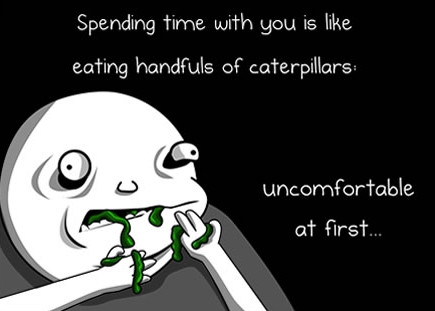
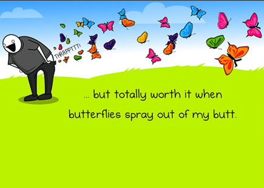
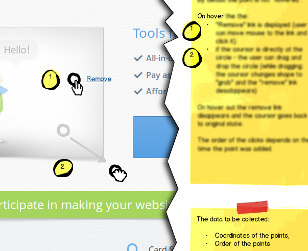
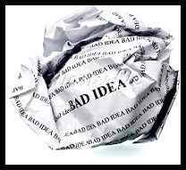
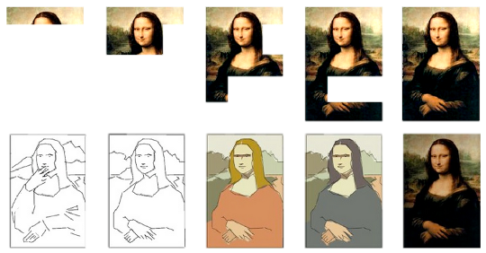
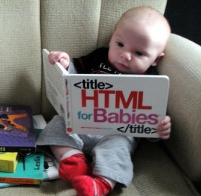

Becoming a
UX hero
Step 1. Get colorful leggings and a cape.
OK, but who's that guy?
Means to save the world:
- Communicating
- Managing effort
- The coding superpower
You are here:

UX bridges the gap between devs and users
How to communicate
- Learn to understand both worlds
- Remember what point of view you represent
AKA why can't a dev be a UX too? - You are responsible for getting everyone to
share the same vision

Understanding devs is tough at first
But totally worth it
Communicate the design
This slide is obviously about mockups
A picture is worth a thousand words
- How many of them are true?
- How many of them are intended?
- How many of them are ambiguous
or misleading? - Isn't a thousand a bit too much?
Case study
The circles with numbers got implemented.
Communicate the design 2
Some useful ideas
- Where do old mockups go to die?
- Remove variants that were dropped
UpdateReplace mockups with printscreens when implemented- Print out current application state to draw on
- Use printscreens as mockup basis when applicable
Mockup fidelity
- Draw your ideas like you had all the paper in the world
- If you can't show it on a pencil drawing, you don't know what you mean
- Mockups are not graphics designs without color
High fidelity prototype
- HiFi prototypes for whole-app designs
- Communicate actual interaction
- Best at describing what dynamics you want
- Reveals issues with too much text
Middle-fidelity?
You're missing the point
Yes, Axure sucks.
If you disagree you can beat me up.
Effort centered design ®
value/price ratio
Fun fact of the day:
UX designers are not hired to make the project more expensive
Stop overdoing design
Appreciate when it's finished

Where is effort created?
- Every problem has multiple solutions,
why not choose the simplest? - Know the constraints - know the cost
- Understand technology and the team
- Gather opinions on feasibility,
you'll get more than you expect - Developers' laziness is a virtue ;)
Art of ballancing user needs and business value the UX job is.Master Yoda
UX designer in a team
...is an investment in fixing misconceptions early

Keeping the effort steady
=
Keeping the spending steady
- So am I representing the users' interest or not?
- Did they hire you?
- Your product has a business model.
- Business model works when users are happy with the product.
- Business model doesn't work when users always get what they want.
- And all they want is a big "do everything" button anyway.
Coding designer
It's a bird!
It's a plane!
No! It's a coding designer!
Learn to code - gain a new superpower!

- Prototype in highest fidelity
- Prototype responsive layouts
- Work directly with the application
It's getting easier
Resources for learning HTML5 and CSS are really nice
Labels
- Usability can be improved by just changing the labels
- Ask your devs, it's easy to change labels yourself
- Do it in the app, not on mockups
- Test it right away!
Designing in the browser
Try ideas on the application itself.
What you see is what can be implemented right away!
Also avaliable abbreviated: WYSIWCBIRA
Tools
- FireFox has "developer tools" targeted at designers
- Addons for responsive design testing

Styleguide
- Make decisions in code!
- Start the project with styleguide
- Devs can make it accessible to you
- You don't need experience to start
contributing to styleguide
.button { border: 1px solid #239ea8; background-color: #14a3e6; }
.button.active { border: 1px solid #000; background-color: yellow; }
.icon-duck { background-image: url('icons/duck.png'); }
.notification { border: 1px solid #000; }
.notification.error { color: red; }
.notification.success { color: lightgreen; }
With great power comes great responsibility
The end
You can now wake up.
Zbyszek "naugtur" Tenerowicz naugtur.pl @naugtur